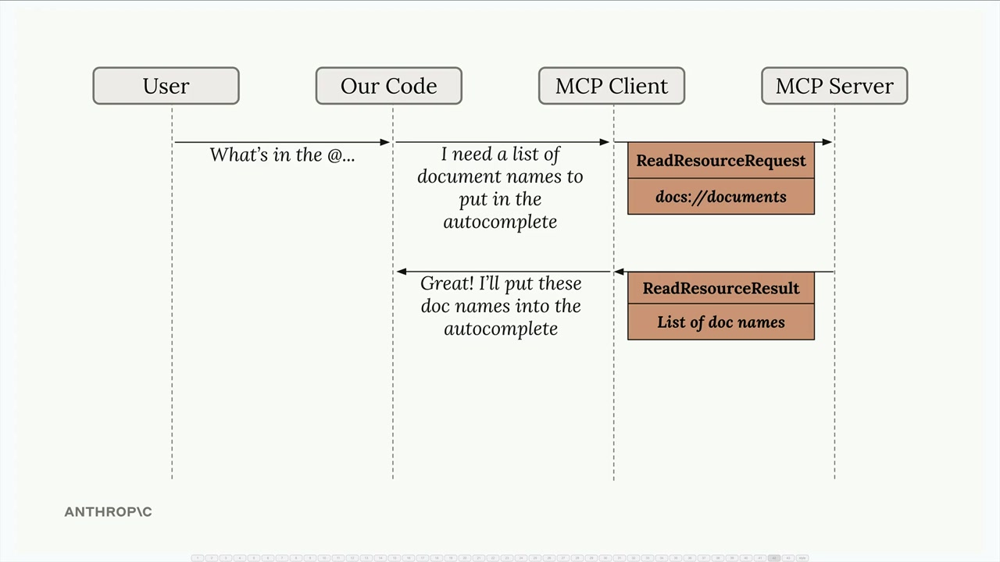
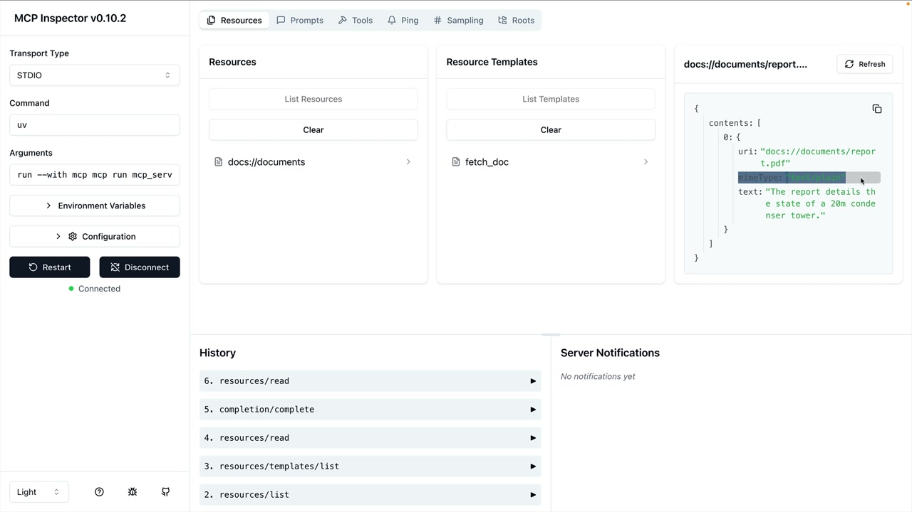

Чтение ресурсов
Чему научитесь
Видео 4:38 и текст урока
К концу урока вы сможете:
- реализовать метод
read_resourceв клиенте; - разбирать содержимое ресурса по MIME-типу;
- подставлять документ в промпт без вызова инструмента.
Видео и текст урока.
Смотреть урок на Skilljar Accessing resources · 4:38Ресурсы в MCP позволяют серверу отдавать данные, которые можно сразу включить в промпт, — без вызовов инструментов для получения информации. Это более эффективный способ дать контекст моделям вроде Claude.
Запросы ресурсов
Когда ресурсы на MCP-сервере описаны, клиенту нужен способ запрашивать и использовать их. Клиент — мост между приложением и MCP-сервером: он автоматически берёт на себя общение и разбор данных.

docs://documents → ReadResourceResult со списком документов.Поток простой: когда пользователь хочет сослаться на документ (например, пишет «@report.pdf»), приложение через MCP-клиент получает этот ресурс с сервера и включает его содержимое прямо в промпт, который уходит Claude.
Чтение ресурса
Основа — функция read_resource в MCP-клиенте. Она принимает URI нужного ресурса:
async def read_resource(self, uri: str) -> Any:
result = await self.session().read_resource(AnyUrl(uri))
resource = result.contents[0]
Ответ MCP-сервера содержит список contents. Обычно нужен только первый элемент — в нём сами данные ресурса и метаданные вроде MIME-типа.
Разные типы содержимого
Ресурсы могут возвращать разные типы содержимого, поэтому клиент должен разбирать их по-разному. MIME-тип подсказывает, как обращаться с данными:
if isinstance(resource, types.TextResourceContents):
if resource.mimeType == "application/json":
return json.loads(resource.text)
return resource.text
Так ресурсы JSON разбираются в объекты Python, а текстовые возвращаются строками. MIME-тип — ваша подсказка, как правильно разбирать данные.
Нужные импорты
Чтобы всё работало, в MCP-клиенте понадобятся импорты:
import json from pydantic import AnyUrl
Модуль json разбирает ответы JSON, а AnyUrl обеспечивает правильный тип параметра URI.
Проверка доступа к ресурсам
После реализации функциональность можно проверить в CLI-приложении. Когда вы пишете что-то вроде «What's in the @report.pdf document?», система должна:
- показать доступные ресурсы в списке автодополнения;
- дать выбрать ресурс;
- автоматически получить содержимое ресурса;
- включить это содержимое в промпт для Claude.

docs://documents/report.pdf: «The report details the state of a 20m condenser tower».Главное преимущество: Claude получает содержимое документа прямо в промпте, без вызовов инструментов. Взаимодействие становится быстрее и эффективнее.
Интеграция с приложением
Помните, что код MCP-клиента используют другие части приложения. Функция read_resource становится строительным блоком, который другие компоненты вызывают, чтобы получить содержимое документов, список ресурсов или встроить данные ресурса в промпт.
Такое разделение ответственности держит код чистым: MCP-клиент отвечает за общение с сервером, а логика приложения — за то, как эффективно использовать данные.
Дальше
Следующий урок — третий примитив: промпты на MCP-сервере.
Оригинал урока: Accessing resources.